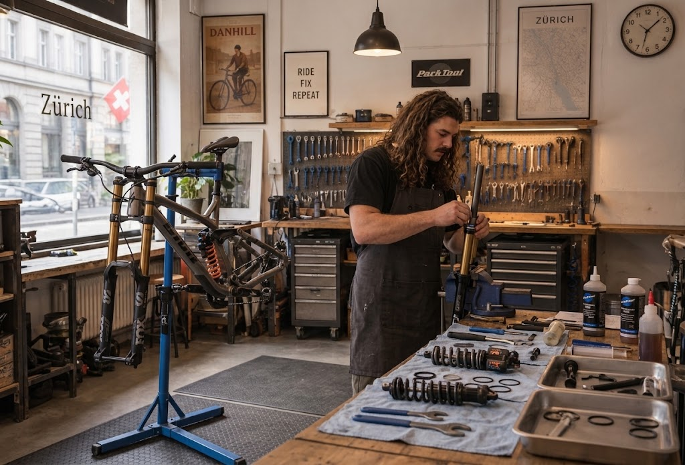
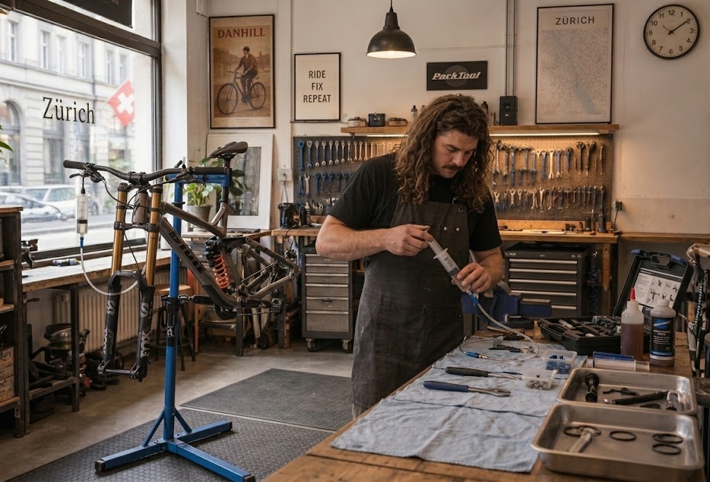
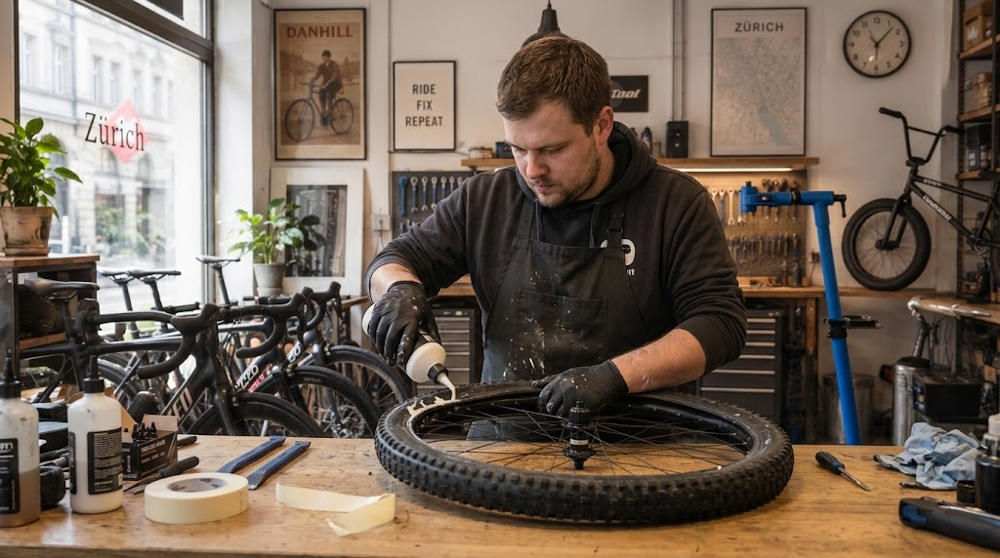
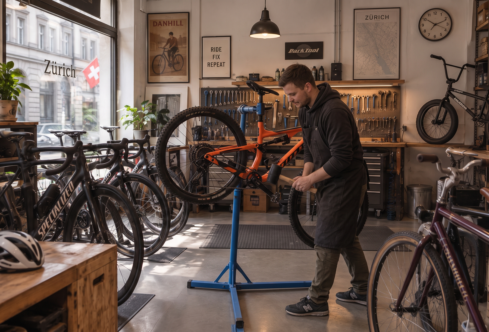

Unsere Dienstleistungen
Fahrwerksservice
Wir bieten professionellen Service für Federgabeln und Dämpfer. Perfekte Abstimmung für Downhill und Freeride-Einsätze.
Ab CHF 120.-


Bremsen entlüften
Präzises Entlüften hydraulischer Scheibenbremsen von SRAM, Shimano, Magura und weiteren Marken für zuverlässige Bremskraft auf dem Trail und der Strasse.
Ab CHF 45.- pro Bremse
Tubeless-Umbau
Wir bauen dein Rad auf Wunsch schlauchlos auf. Dazu dichten wir die Felge ab, ziehen den Reifen auf und füllen Dichtmilch ein.
Ab CHF 150.- pro Rad


Tretkurbel Service
Wir bieten Service für Tretkurbeln, darunter das Wechseln von Lagern, das Reinigen und Schmieren der Kurbelgarnitur sowie das Einstellen der Kettenlinie.
Ab CHF 80.-